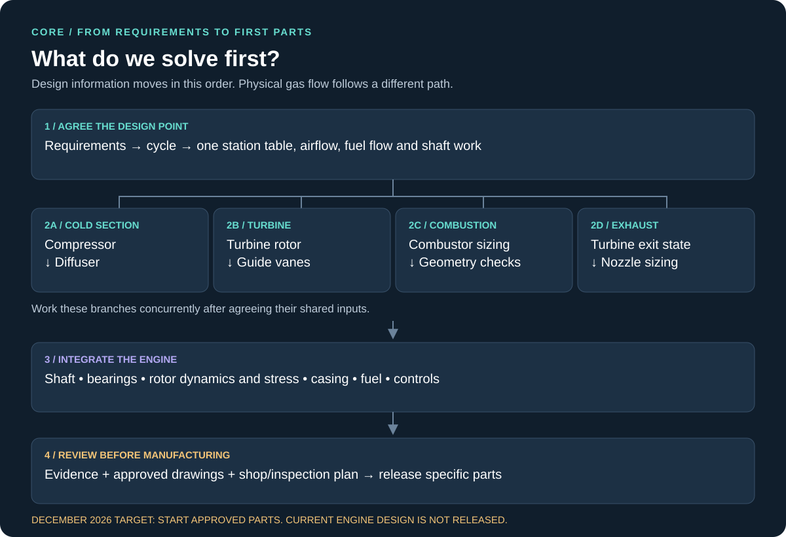
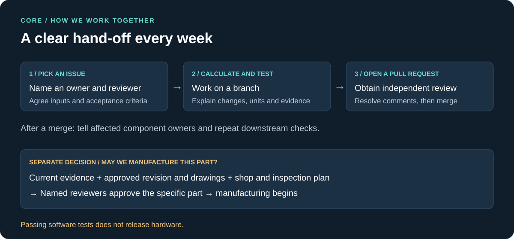

CORE · component design order
Use this overview to coordinate the team. The generated dependency graph gives the exact software order.

Team workflow

Preliminary, not for manufacture. Resolve the critical-speed issue and obtain the missing component evidence.